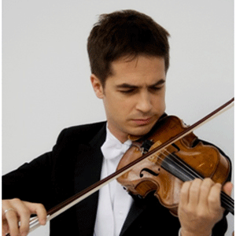
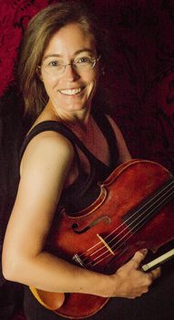

The Conductors
Youth Orchestra
Robert Turizziani –In addition to his work with the West Virginia Youth Orchestra, Mr. Turizziani founded and led the Seneca Chamber Orchestra and is currently the Music Director of both the Chicago Chamber Orchestra and the River Cities Symphony. He is the principal clarinet of the West Virginia Symphony and graduated from the University of Cincinnati’s College-Conservatory of Music with a degree in clarinet performance. He has performed with the orchestras of Cincinnati, Columbus, Louisville, as well as the Cincinnati Pops and Opera. Under his direction, the West Virginia Youth Orchestra has made four international tours, Prague and Central Europe (2000), Italy and Austria (2006), and Hungary, Slovakia, and Austria (2012) and Hungary, Slovakia and the Czech Republic (2017). Mr. Turizziani teaches at West Virginia Wesleyan College and West Virginia State University.
Youth String
Ian Jessee, an Ohio native, came to West Virginia to participate in the West Virginia Symphony Artist-in Residence program as a string instructor for the Kanawha County Schools. Mr. Jessee earned a bachelor’s degree in violin performance from Ohio State University. He performs with the West Virginia Symphony, Ohio Valley Symphony, and is concertmaster of the River Cities Symphony Orchestra. He spends summers in Austria as a violinist in the Classical Music Festival, playing in the Kismarton Quartet. He has participated in the New Hampshire Music Festival, and the Bach and Beyond Baroque Music Festival (Fredonia, NY). In 2007 and 2008, Mr. Jessee served on the faculty of the International Music Festival Akademi Datça in Turkey.
As an educator, Mr. Jessee’s public school programs have consistently received superior ratings and highest honors in regional and state competitions, and in 2011 placed 1st in the prestigious National Orchestra Festival, part of the American String Teachers Association Conference. He served from 2006-2008 as president of the West Virginia Chapter of ASTA, and currently serves as state chapter president of National Federation of Music Clubs (NFMC) organizing competitions and festivals . He is also a member of the Music Educators National Conference, the Ohio Music Education Association, the Conductors’ Guild, and the West Virginia Music Teachers’ Association.
Cadet Strings
Sandra Groce moved to Charleston in 1998 to become violist of the Montclaire String Quartet and Principal Viola the West Virginia Symphony. She continues as a section player in the WVSO, though she stepped down from the combined Quartet/Principal Viola position in 2010.
Sandra grew up in Philadelphia, was educated at Yale University and the Eastman School and received her Master’s Degree in performance from the University of Oregon. Prior to joining the West Virginia Symphony she was a member of the New World Symphony in Miami, Florida. She also performed several summer seasons with the Spoleto Festival Orchestra in South Carolina and Italy, and the Central City Opera in Colorado.
In her 16 years (and counting) in Charleston, Sandra has worked with many young string players through private lessons in her own home teaching studio, working with students in the Kanawha County Schools String program and coaching sectionals and chamber music for the West Virginia Youth Symphony.
Sandra can think of no place she would rather make her home than in the Mountain State with her husband Larry and daughters Virginia and Bonnie.
Youth Winds

Bobby Jenks - Mr. William Robert (“Bobby”) Jenks is a native of McDowell County, West Virginia where he graduated from Iaeger High School. He is a graduate of Concord University with a Bachelor of Science in Music Education for grades K-12. While at Concord, Mr. Jenks studied trombone and jazz from Mr. Randy Budd. He received his Master of Arts in Music (trombone performance), from Marshall University, and studied with Dr. Michael Stroeher. He has taught in North Carolina, Virginia, and has spent most of his teaching career in West Virginia.
His Concert Bands and Jazz Ensembles have received numerous Superior both regionally and nationally. His marching bands, including The Pride of Capital High, won several Grand Championships. Mr. Jenks’ students have been members of the West Virginia All-State Band, as well as All-County, performed for Solo and Ensemble (WVMEA Solo and Ensemble), WV Youth Symphony, National Youth Symphony Orchestra, and many other additional activities.
He is a member of the National Association for Music Education and the International Trombone Association. Mr. Jenks is an active member of the Phi Beta Mu Bandmasters Fraternity and coordinates the band director clinic for WV band directors sponsored by (WV Bandmasters Association and Phi Beta Mu). He has been very active with the West Virginia Bandmasters Association, having served as the Secretary/Treasurer, as well as the Region 4 Band Festival Chair. He is currently serving as the graded music list chair for the WV Bandmasters Association, and is the President-Elect for the WVMEA Conference.
Bobby plays trombone in The Brass 5, Lead Trombone (and personnel director) for The Jewel City Jazz Orchestra, and is a substitute trombonist for the River Cities Orchestra, Huntington Symphony Orchestra, as well as a substitute for the Laundau Murphy, Jr. Band. He leads the Christ Church Brass and is a member of the Chancel Choir and Chancel Ringers at Christ Church United Methodist. He sings tenor with the West Virginia “Opus Chorale”. Mr. Jenks is a wrestling official through the West Virginia Secondary Schools Activities Commission in the Kanawha Southern Board, and previously coached wrestling for several years. He and his wife Emily, along with their twins, reside in Hurricane. Mr. Jenks is in his 22nd year as a music educator. He currently instrumental music / band director at Capital High School.